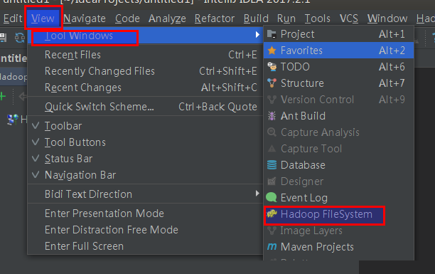

本节，简单介绍一下，HDFS文件系统浏览器的管理，FileSystemBrowserManager和扩展IDEA浮动面板的实现。
文件系统浏览管理类：FileSystemBrowserManager
FileSystemBrowserManager作用是在IDEA加载一个新的工程时，进行FileSystem的相关设置。他是Project级别的插件组件，实现了抽象类
AbstractProjectComponent，该类继承ApplicationAdapter、实现接口ProjectComponent、ProjectManagerListener。FileSystemBrowserManager需要进行持久化，因此还实现了 PersistentStateComponent接口。持久化文件使用 注解 @State、@Storage 来注明。
代码判断如下：
| @State(name = "HadoopNavigator.Project.FileSystemBrowserManager",
storages = {@Storage(file = "$PROJECT_CONFIG_DIR$/hdfsnavigator.xml", scheme = StorageScheme.DIRECTORY_BASED),
@Storage(file = "$PROJECT_FILE$")})
public class FileSystemBrowserManager
extends AbstractProjectComponent
implements PersistentStateComponent<Element>{}
|
hdfsnavigator.xml 为持久化文件。
1
2
3
4
5
6
7
8
9
10
11
12
13
14
15
16
17
18
19
20
21
22
23
24
25
26
27
28
29
30
31
32
33
34
35
36
37
38
39
40
41
42
43
|
@Nullable
public ConnectionHandler getActiveConnection()
{
FileSystemBrowserTree activeBrowserTree = getActiveBrowserTree();
if (activeBrowserTree != null)
{
BrowserTreeModel browserTreeModel = activeBrowserTree.getModel();
if ((browserTreeModel instanceof TabbedBrowserTreeModel))
{
TabbedBrowserTreeModel tabbedBrowserTreeModel = (TabbedBrowserTreeModel) browserTreeModel;
return tabbedBrowserTreeModel.getConnectionHandler();
}
FileSystemBrowserTreeNode browserTreeNode = activeBrowserTree.getSelectedNode();
if (browserTreeNode != null)
{
return browserTreeNode.getConnectionHandler();
}
}
return null;
}
@NotNull
public ToolWindow getBrowserToolWindow()
{
ToolWindowManager toolWindowManager = ToolWindowManager.getInstance(getProject());
return toolWindowManager.getToolWindow(TOOL_WINDOW_ID);
}
@NotNull
public BrowserToolWindowForm getToolWindowForm()
{
return this.toolWindowForm.get();
}
|
1
2
3
4
5
6
7
8
9
10
11
12
13
14
15
16
17
18
19
20
21
22
23
24
25
26
27
28
29
30
31
32
|
public void initComponent()
{
EventUtil.subscribe(null, ProjectLifecycleListener.TOPIC, this.projectLifecycleListener);
}
private ProjectLifecycleListener projectLifecycleListener = new ProjectLifecycleListener()
{
@Override
public void projectComponentsInitialized(@NotNull Project project)
{
EventUtil.subscribe(project,null, ConnectionBundleSettingsListener.TOPIC,this.connectionBundleSettingsListener);
}
private ConnectionBundleSettingsListener connectionBundleSettingsListener = new ConnectionBundleSettingsListener()
{
@Override
public void settingsChanged()
{
getToolWindowForm().rebuild();
}
};
};
|
自定义IDEA的浮动面板插件。
IDEA浮动面板，可以理解为 Tool Window。如要显示一个自定义的Tool Window，也很简单，首先，要自定义类，实现ToolWindowFactory接口，该接口有 一个方法 createToolWindowContent(@NotNull Project project, @NotNull ToolWindow toolWindow)，在自定义类中重写。代码如下：
|
public class FileSystemBrowserToolWindowFactory implements ToolWindowFactory,DumbAware
{
public void createToolWindowContent(@NotNull Project project, @NotNull ToolWindow toolWindow)
{
BrowserToolWindowForm toolWindowForm = FileSystemBrowserManager.getInstance(project).getToolWindowForm();
ContentFactory contentFactory = new ContentFactoryImpl();
Content content = contentFactory.createContent(toolWindowForm.getComponent(), null, false);
toolWindow.getContentManager().addContent(content);
toolWindow.setIcon(Icons.FILE_SYSTEM_HDFS);
}
}
|
然后，在插件配置文件扩展点节点，注册该类即可。
|
<extensions defaultExtensionNs="com.intellij">
<toolWindow id="Hadoop FileSystem" icon="/img/hadoop-logo-16x16.png"
anchor="left"
factoryClass="com.fangyuzhong.intelliJ.hadoop.fsbrowser.FileSystemBrowserToolWindowFactory"/>
</extensions>
|
设置显示的文字和相关图标。运行插件后，会在 IDEA的 View菜单—> Tool Windows —-> 显示 Hadoop FileSystem

总结
经过前面的几节和本节的内容，就已经把Hadoop的文件系统浏览器的界面UI这块说完了。后面的几节，将会介绍HDFS文件浏览器的其他设计和实现。